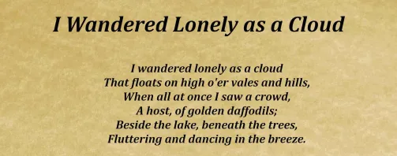
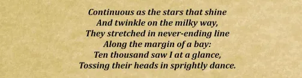
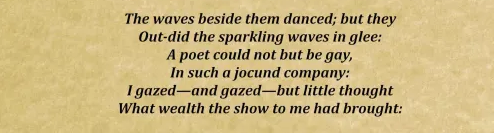
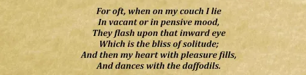

A Journey of Purpose and Passion
- Polished
- Rough
- Techniques
Polished Draft

In a world where many pursue the fleeting allure of wealth and recognition, there is one young woman who remains grounded in a purpose much deeper and more profound. Meet SaraeVin, an 18-year-old English major who embraces life not for the rewards it can offer, but for the love and belief bestowed upon her by the two most important forces in her life: her parents and her boyfriend, Shin.
For the longest time, my life revolved around living up to the expectations of others rather than myself. I'd come to realize that this form of life wasn't plausible and would only lead to disappointment. Though the journey I've had to embark to have this understanding wasn't conventional, it was a necessary lesson of self-acceptance and appreciation.
From a young age, SaraeVin’s parents instilled in her the value of education, kindness, and unwavering dedication to her passions. They taught her that life’s true worth lies not in the material things one can accumulate, but in the way one gives back to those who have supported and believed in them. This belief became her guiding star, influencing not only her choices but her interactions with the world around her.
As she grew older, SaraeVin’s natural curiosity and intellectual prowess led her to the world of literature and language. The nuances of the English language fascinated her, and it wasn’t long before she knew that studying English would become her life’s path. With each book she read, each essay she wrote, and every thoughtful conversation she engaged in, SaraeVin found herself further immersed in the world of words. But it wasn’t just about the beauty of language; it was about the power of communication to connect, inspire, and bring people together. This understanding gave her a sense of purpose that transcended personal gain.
While many her age might seek out fame or fortune, SaraeVin’s ambitions are rooted in a desire to express her gratitude for the love and belief that shaped her. She is a student not just of English, but of life itself—learning from those around her and giving back in the way she knows best: through words, actions, and heartfelt connections. It is through this lens that SaraeVin sees the world, finding beauty in the everyday moments that others might overlook, and cherishing the relationships that have helped her grow.
Shin, her 20-year-old sweetie, is a constant and steadfast presence in her life. A cybersecurity expert, Shin has an innate understanding of systems and security, but it’s his emotional intelligence and unwavering support that sets him apart. He is not only an expert in his field but also someone who knows how to strengthen those around him when they need it most. Whenever SaraeVin feels the weight of the world on her shoulders or finds herself weary from the demands of her studies, Shin is there to remind her of her strength.
One evening, after a particularly long and exhausting week of finals, SaraeVin felt overwhelmed by the pressure. She was physically drained, mentally spent, and the thought of continuing seemed impossible. She was on the verge of tears when Shin called. Sensing her distress, he reassured her with his calm, grounding presence. "You’ve made it this far because of your dedication," he said softly, his voice full of conviction. "Take a deep breath. I know you’re tired, but you are stronger than you think. Remember all the times you’ve pushed through before—this is no different. You’ve got this, and I’ll be right here cheering you on every step of the way."
His words, simple yet profound, infused SaraeVin with the courage she needed to keep going. She felt her burdens lighten and her spirit lift. His belief in her gave her the strength to push through the final stretch of her exams, and she finished the semester with a sense of accomplishment. Shin’s ability to provide that unwavering support—his steady, calming presence and belief in her—has been a constant source of strength for SaraeVin throughout their relationship.
Their relationship is built on mutual respect, understanding, and a shared journey of self-discovery. Shin’s belief in SaraeVin’s potential has been a driving force in her life, pushing her to chase her dreams without hesitation. His thoughtful and caring nature not only makes him a brilliant partner but also a true friend who shares in the triumphs and struggles of life. For SaraeVin, their bond is not just a part of her life; it is a reflection of the love and belief that her parents have given her.
SaraeVin’s journey, though young, is already filled with remarkable moments of growth and achievement. She has excelled academically, impressing her professors with her insight and creativity. Yet, it is not just her academic prowess that sets her apart; it is her ability to connect with others through her words. Whether through writing or conversation, SaraeVin has the unique gift of making those around her feel heard, valued, and understood. Her empathy and sensitivity to the world’s complexities are what truly define her, making her not only an exceptional student but a compassionate individual.
Her passion for English extends beyond the classroom. SaraeVin is constantly seeking ways to share her love for literature with others, volunteering to tutor younger students and organizing book clubs that encourage open dialogue and exploration of diverse perspectives. She believes in the power of literature to change lives, and she is dedicated to ensuring that others can experience that same transformative power. SaraeVin’s selflessness and commitment to helping others are testaments to the values instilled in her by her parents, who have always encouraged her to make a difference in the world, no matter how small the act may seem.
At heart, SaraeVin is a storyteller. She weaves tales of her experiences, thoughts, and dreams, often finding new ways to share her voice through blogs, social media, and personal writings. But she doesn’t do this for recognition; she does it because she believes in the power of storytelling to heal, unite, and inspire. Through her words, she creates a space where others can find solace, encouragement, and a sense of belonging.
Though she’s still young, SaraeVin’s perspective on life is mature beyond her years. She understands that the road ahead will not always be easy, but she faces it with the same determination and grace that have guided her thus far. For SaraeVin, the future is not about accumulating wealth or accolades—it’s about continuing to live with intention, honoring the love and belief that have shaped her, and striving to be the person her parents and Shin believe she can be.
In a world that often feels disconnected and driven by superficial desires, SaraeVin’s story is a breath of fresh air. She is a reminder that true fulfillment comes not from what we gain, but from what we give back. SaraeVin is living proof that when you live with purpose, when you live to requite the love and belief of those who have supported you, the world becomes a better place. She is the embodiment of selflessness, gratitude, and the power of human connection.
As SaraeVin embarks on the next chapter of her life, one thing is certain: her journey will be one of purpose, passion, and unwavering commitment to the values that have shaped her. And with Shin, her constant source of support, love, and strength, by her side, the future is brighter than ever.
Rough Draft
This essay explores the origin and significance of a belief shaped by various journeys and battles with mental health. It examines the challenges posed by societal expectations, mental well-being, and the evolution of self-perception. Using metaphors of paintings, it illustrates a journey of self-love and acceptance.
In a world where many pursue the fleeting allure of wealth and recognition, there is one young woman who remains grounded in a purpose much deeper and more profound. Meet SaraeVin, an 18-year-old English major who embraces life not for the rewards it can offer, but for the love and belief bestowed upon her by the two most important forces in her life: her parents and her boyfriend, Shin.
From a young age, SaraeVin’s parents instilled in her the value of education, kindness, and unwavering dedication to her passions. They taught her that life’s true worth lies not in the material things one can accumulate, but in the way one gives back to those who have supported and believed in them. This belief became her guiding star, influencing not only her choices but her interactions with the world around her.  As she grew older, SaraeVin’s natural curiosity and intellectual prowess led her to the world of literature and language. The nuances of the English language fascinated her, and it wasn’t long before she knew that studying English would become her life’s path. With each book she read, each essay she wrote, and every thoughtful conversation she engaged in, SaraeVin found herself further immersed in the world of words. But it wasn’t just about the beauty of language; it was about the power of communication to connect, inspire, and bring people together. This understanding gave her a sense of purpose that transcended personal gain.
While many her age might seek out fame or fortune, SaraeVin’s ambitions are rooted in a desire to express her gratitude for the love and belief that shaped her. She is a student not just of English, but of life itself—learning from those around her and giving back in the way she knows best: through words, actions, and heartfelt connections. It is through this lens that SaraeVin sees the world, finding beauty in the everyday moments that others might overlook, and cherishing the relationships that have helped her grow.
Shin, her 20-year-old sweetie, is a constant and steadfast presence in her life. A cybersecurity expert, Shin has an innate understanding of systems and security, but it’s his emotional intelligence and unwavering support that sets him apart. He is not only an expert in his field but also someone who knows how to strengthen those around him when they need it most. Whenever SaraeVin feels the weight of the world on her shoulders or finds herself weary from the demands of her studies, Shin is there to remind her of her strength.
One evening, after a particularly long and exhausting week of finals, SaraeVin felt overwhelmed by the pressure. She was physically drained, mentally spent, and the thought of continuing seemed impossible. She was on the verge of tears when Shin called. Sensing her distress, he reassured her with his calm, grounding presence. "You’ve made it this far because of your dedication," he said softly, his voice full of conviction. "Take a deep breath. I know you’re tired, but you are stronger than you think. Remember all the times you’ve pushed through before—this is no different. You’ve got this, and I’ll be right here cheering you on every step of the way."
His words, simple yet profound, infused SaraeVin with the courage she needed to keep going. She felt her burdens lighten and her spirit lift. His belief in her gave her the strength to push through the final stretch of her exams, and she finished the semester with a sense of accomplishment. Shin’s ability to provide that unwavering support—his steady, calming presence and belief in her—has been a constant source of strength for SaraeVin throughout their relationship.
Their relationship is built on mutual respect, understanding, and a shared journey of self-discovery. Shin’s belief in SaraeVin’s potential has been a driving force in her life, pushing her to chase her dreams without hesitation. His thoughtful and caring nature not only makes him a brilliant partner but also a true friend who shares in the triumphs and struggles of life. For SaraeVin, their bond is not just a part of her life; it is a reflection of the love and belief that her parents have given her.  SaraeVin’s journey, though young, is already filled with remarkable moments of growth and achievement. She has excelled academically, impressing her professors with her insight and creativity. Yet, it is not just her academic prowess that sets her apart; it is her ability to connect with others through her words. Whether through writing or conversation, SaraeVin has the unique gift of making those around her feel heard, valued, and understood. Her empathy and sensitivity to the world’s complexities are what truly define her, making her not only an exceptional student but a compassionate individual.
Her passion for English extends beyond the classroom. SaraeVin is constantly seeking ways to share her love for literature with others, volunteering to tutor younger students and organizing book clubs that encourage open dialogue and exploration of diverse perspectives. She believes in the power of literature to change lives, and she is dedicated to ensuring that others can experience that same transformative power. SaraeVin’s selflessness and commitment to helping others are testaments to the values instilled in her by her parents, who have always encouraged her to make a difference in the world, no matter how small the act may seem.
At heart, SaraeVin is a storyteller. She weaves tales of her experiences, thoughts, and dreams, often finding new ways to share her voice through blogs, social media, and personal writings. But she doesn’t do this for recognition; she does it because she believes in the power of storytelling to heal, unite, and inspire. Through her words, she creates a space where others can find solace, encouragement, and a sense of belonging.
Though she’s still young, SaraeVin’s perspective on life is mature beyond her years. She understands that the road ahead will not always be easy, but she faces it with the same determination and grace that have guided her thus far. For SaraeVin, the future is not about accumulating wealth or accolades—it’s about continuing to live with intention, honoring the love and belief that have shaped her, and striving to be the person her parents and Shin believe she can be.
In a world that often feels disconnected and driven by superficial desires, SaraeVin’s story is a breath of fresh air. She is a reminder that true fulfillment comes not from what we gain, but from what we give back. SaraeVin is living proof that when you live with purpose, when you live to requite the love and belief of those who have supported you, the world becomes a better place. She is the embodiment of selflessness, gratitude, and the power of human connection.
As SaraeVin embarks on the next chapter of her life, one thing is certain: her journey will be one of purpose, passion, and unwavering commitment to the values that have shaped her. And with Shin, her constant source of support, love, and strength, by her side, the future is brighter than ever.
 